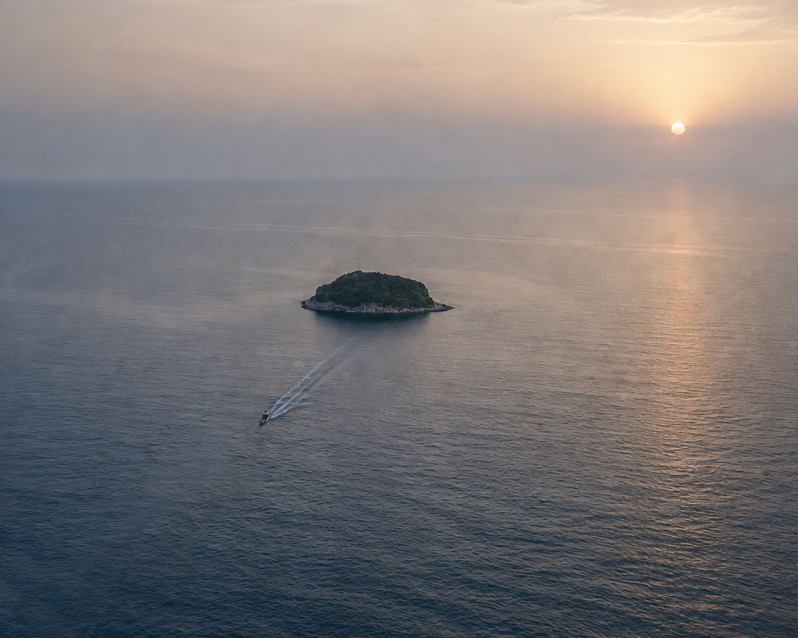

Legge 68/99
La cornice normativa che tutela il diritto al lavoro delle persone con disabilità e regola il collocamento mirato.
PERCORSI DI LAVORO · LEGGE 68/99
Il lavoro si costruisce. Un passo alla volta. Percorsi concreti di formazione e inserimento per chi cerca una vera occasione.

Chi siamo
Lo scopo primario delle Isole Formative è quello di poter abituare al mondo del lavoro quelle persone che per tanti motivi credono di non poterne fare parte o che hanno smesso di crederci.
Dovrebbe essere superato e superfluo dover ancora spiegare che si tratta di persone che spesso si sono scontrate con la difficoltà delle persone "normali" ad accettare chi non corrisponde a quei criteri di perfezione che nessuna società è ancora riuscita a superare — questo vale sia per le comunità nel loro complesso che per le singole persone che ne fanno parte. Per questo, scriviamo con l'obiettivo di uscire dallo stereotipo dei "poverini", dei "limitati", dei "ritardati" e di tante altre belle definizioni.
Allo stesso tempo, vogliamo fornire informazioni utili a chi in futuro aderirà alle Isole Formative — sia tirocinanti che aziende che, per la poca conoscenza di questi dispositivi, non ne sono al corrente.
Non è la soluzione che risolve il problema. Chi esce dalle Isole Formative non sempre riesce a trovare lavoro facilmente, o non lo trova affatto. C'è ancora da migliorare: pur avendo una durata di circa un anno, le Isole Formative mancano di una certificazione professionale che garantirebbe un accesso più facile al mondo del lavoro.
Noi, come Isola Formativa 2025/2026, possiamo essere felici di aver visto andare via Patrik che, durante la costruzione del proprio profilo LinkedIn, è stato contattato da diverse aziende e oggi lavora. Così come possiamo essere felici che Carlotta, nostra attuale collega e appassionata di disegno, abbia trovato lo stimolo di raccontare in maniera astratta le giornate dell'Isola con delle strisce a fumetti, che troverete scorrendo questa pagina.
La nostra missione
Molte persone hanno smesso di credere di avere un posto nel mondo del lavoro. Le Isole Formative hanno lo scopo di ricostruire fiducia attraverso esperienza pratica, strumenti concreti, relazioni con persone e aziende.
Ambienti reali, ritmi reali, responsabilità reali.
Fianco a fianco con aziende e cooperative sociali.
Persone raccontate per le competenze, non per le etichette.
Strumenti formativi
Ogni passaggio può rappresentare un blocco su cui costruire il successivo: dalla tutela della legge, al dispositivo formativo, fino allo strumento che accompagna l'ingresso vero e proprio in azienda.
La cornice normativa che tutela il diritto al lavoro delle persone con disabilità e regola il collocamento mirato.
Percorsi di circa un anno per costruire competenze, abitudini lavorative e autonomia in un ambiente protetto.
Strumento complementare che, insieme alle Isole Formative, favorisce l'inserimento tramite le cooperative sociali.
Progetti e attività
Le esperienze di chi partecipa o ha partecipato alle Isole Formative sono il cuore di questo progetto.
Una panoramica delle attività pratiche portate avanti ogni giorno durante il percorso.
Scopri le attività →Strisce disegnate da una collega dell'Isola Formativa di Vimercate, che raccontano con ironia le giornate del percorso.
Guarda le strisce →Testimonianze raccolte da tirocinanti con percorsi in corso o già conclusi.
Ascolta le voci →La rete
Una raccolta di dispositivi e riferimenti pratici su inserimento lavorativo, collocamento mirato e strumenti di accompagnamento.
Cos'è, a chi si rivolge e come attivarla tramite il collocamento mirato.
Durata, obiettivi e cosa aspettarsi da un percorso di un anno.
Cooperative sociali, tutor e aziende che rendono possibile ogni percorso.
Approfondimenti e documentazione raccolta da incontri ed esperienze dirette.
Contatti
Sei un'azienda interessata al collocamento mirato, una cooperativa sociale o una persona che vuole saperne di più? Scrivici.